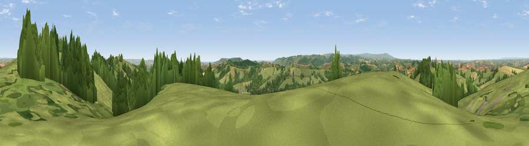

Viewpoint near Pathfinder Village
#10589 in England · top 16% of its area beats it · near Pathfinder VillageWhere it is
The exact computed spot (SX 84975 94425). Click the marker for map links.
The view, rendered

A 360° render of this exact spot computed from the terrain model, tree cover and land cover — summer colours, afternoon light, calibrated against photographs of famous viewpoints. Real trees, hedges and buildings will differ in detail.
The panorama
Grey silhouette: terrain skyline in each direction (720 bearings, Earth curvature and refraction included). Dashed green: skyline with trees (+15 m) and buildings (+8 m) as obstacles. Blue strip: how far the ground is visible on each bearing.
Where the view opens
Wedge length = distance to the farthest visible ground on that bearing (vegetation-aware). Rings at 10, 25 and 50 km.
What fills the view
65% grassland · 26% woodland · 6% cropland · 2% built-up
Angular shares of the visible panorama (visual magnitude), not map area. Landscape diversity 0.39 (0–1 Shannon).
Key numbers
More beautiful places nearby
The staircase of upgrades: each row has a higher view potential than everything closer. Driving times are estimates from straight-line distance, calibrated against real road routing — check an actual route before setting out.
| Place | Direction | Drive | Score |
|---|---|---|---|
| Viewpoint near Pathfinder Village | WNW · 1 km | ~2 min | 68.2 |
| Viewpoint near Whitestone | ENE · 1 km | ~3 min | 75.1 |
| Viewpoint near Whitestone | ENE · 2 km | ~4 min | 79.8 |
| Viewpoint near Kenn | SSE · 12 km | ~23 min | 80.0 |
| Viewpoint near Kenton | SSE · 15 km | ~27 min | 80.7 |
| Viewpoint near Kenton | SSE · 16 km | ~28 min | 82.9 |
| Viewpoint near Holcombe | SSE · 21 km | ~35 min | 83.3 |
| Viewpoint near Shaldon | SSE · 25 km | ~40 min | 83.8 |
50.73801, -3.63144 · source: screening · position refined by local search. Computed location — check access rights before visiting.